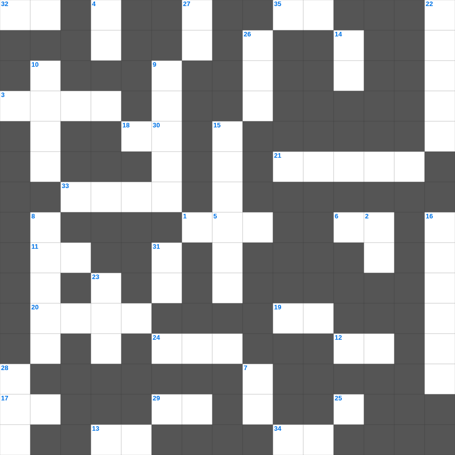

요한복음 마스터 100 (2/2)
📌 서비스 정의
십자가로세로는 교회 주보와 주일학교에서 사용할 수 있는 성경 기반 가로세로 퍼즐 서비스입니다. 성경 인물, 사건, 핵심 구절을 바탕으로 제작되었습니다. 온라인 풀이 및 인쇄 기능을 제공합니다.
📖 요한복음란?
요한복음은 예수 그리스도를 하나님의 아들이자 생명의 주로 소개합니다. 표적과 말씀을 통해 믿음으로 영생을 얻게 하는 목적이 밝혀져 있으며, 사랑과 진리의 메시지가 두드러집니다. 총 21장입니다.
📚 요한복음의 주요 사건·주제
말씀이 육신이 되심(요한복음 1장) · 물로 포도주를 만든 첫 표적 · 니고데모와의 대화(요 3장) · 최후의 만찬과 다락방 강화 · 십자가, 부활, 도마의 신앙고백
오늘은 요한복음의 주요 내용을 담은 요한복음 성경퀴즈를 준비했습니다. 총 35개의 힌트가 있으며, 주일학교 교재나 성경공부 자료로 활용하기 좋습니다. 무료로 즐기는 요한복음 가로세로 퍼즐을 지금 바로 풀어보세요!

📝 가로 힌트
1. 에스겔 33장에서 다시 강조된 사명
3. 히스기야가 유월절을 지키기 위해 보낸 보발꾼들이 전한 말 '하나님께 이것하라'
6. 삼손이 힘이 빠진 후 잡혀간 성읍
11. 하나님이 에스겔에게 '인자야'라고 부르신 횟수 (약 90회 이상)
12. 메네는 하나님이 이미 왕의 나라의 시대를 세어서 그것을 이것 하게 하셨다 함이요
13. 그 기둥은 은이요 바닥은 금이요 자리는 이것 담요라
17. 가난한 자는 이것을 좋아하는 자의 미움도 받게 되나 부요한 자는 친구가 많으니라
18. 네가 하나님께 서원하였거든 이것 하기를 더디게 하지 말라
19. 모세가 자신의 짐을 나누기 위해 세운 지도자들
20. 요담의 비유에 등장하는 가장 쓸모없는 나무
21. 제사장의 축복 기도 '여호와는 네게 복을 주시고 너를 이것하시기를'
24. 기드온이 미디안 진영에 몰래 들어갔을 때 들은 것
25. 하나님께 나아가는 자는 반드시 그가 계신 것과 또한 그가 자기를 찾는 자들에게 이것 주시는 이심을 믿어야 할지니라
29. 노아 시대에 온 세상을 뒤덮은 물 심판
32. 내 사랑아 내가 너를 바로의 병거의 이것에 비하였구나
33. 믿음이 없이는 하나님을 이것하게 못하나니
34. 골수에 사무치니 답답하여 이것 할 수 없나이다
35. 네 머리털은 길르앗 산 기슭에 누운 이것 떼 같구나
📝 세로 힌트
2. 정직한 자의 성실은 자기를 인도하거니와 이것한 자의 패역은 자기를 망하게 하느니라
4. 선물하기를 거짓 자랑하는 자는 비 없는 구름과 이것 같으니라
5. 왕이 잔치를 베푼 도성 이름
7. 하나님이 이 모든 일로 말미암아 너를 이것 하실 줄 알라
8. 이스라엘이 가나안 족속을 쫓아내지 않아 그들이 이것이 됨
9. 나병 환자가 치유된 후 정결 의식에 쓰는 새
10. 여호와께서 하늘에서 살피시고 이것 하실 때까지니라
14. 에스더가 왕후로 뽑히기 전 몸을 정결하게 한 기간
15. 충성된 사자는 그를 보낸 이에게 마치 추수하는 날의 이것 같아서
16. 에스겔 47장에서 강 좌우에 자라는 나무의 특징
22. 느헤미야 13장의 핵심 주제
23. 그들은 내 백성이 되고 나는 그들의 이것이 되리라
26. 여리고 성을 마지막 날에는 몇 번 돌았는가
27. 내 아들아 또 이것들을 받으라 많은 책들을 만드는 것은 끝이 없고 많이 공부하는 것은 몸을 피곤하게 하느니라
28. 내 머리에는 이슬이, 내 머리털에는 밤이슬이 가득하였다 하는구나
30. 내 형제들아 너희가 여러 가지 시험을 당하거든 온전히 이것게 여기라
31. 처녀 내 백성이 멸망할 때에 내 눈의 눈물이 이것 같도다
🧩 이 퍼즐에서 배우는 내용
이 퍼즐은 요한복음 마스터 100 (2/2)의 핵심 단어와 개념을 자연스럽게 복습할 수 있도록 구성되었습니다. 주일학교 수업이나 개인 성경공부에서 학습 내용을 점검하는 용도로 바로 활용할 수 있습니다.
🧑🏫 교회 교육 자료 활용
이 퍼즐은 주일학교 교재 추천 자료로 활용할 수 있고, 주일학교 주보에 넣기 좋은 분량으로 구성되어 있습니다. 수업용 주일학교 교안에 활동지로 붙이거나, 예배 후 복습용 주일학교 공과교재로 바로 사용할 수 있습니다.
🏷️ 키워드
요한복음 성경퀴즈, 요한복음, 십자가로세로, 성경퀴즈, 말씀퀴즈, 가로세로퍼즐, 주일학교 교재 추천, 주일학교 주보, 주일학교 교안, 주일학교 공과교재